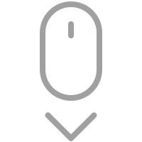

I'm a developer based in Melbourne, currently
undergoing my second year of Computer Science
at Monash University. Get In Touch

01. About Me
Hey! I'm Keaton, a developer and CS student in my
penultimate year of study. I like to develop things
in my spare time — more recently i've focused on
web development.
Here's a few technologies i've been working with recently:
JavaScript
MongoDB
Python
Node.js
Java
Linux
02. Personal Projects
PigeonPost is a full-stack web app similar to Twitter.
Users are able to anonymously post short messages or follow other users and see a personalized feed.